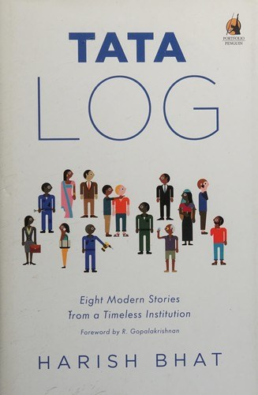

Library › Business & Startups
Tata Log: Eight Modern Fables from Indian Business — Summary & Key Lessons

Eight inside stories from the house of Tata: a hotel that fought terror, a jewelry brand that ate humble pie, a telecom gamble by the second, and the trust that underwrites them all.
📖 OPEN THE FULL INTERACTIVE BREAKDOWN →🌐 Read it in Hindi, Hinglish, Gujarati, Tamil & 22 more languages — free, with audio.
💡 The Big Idea
Bhat, a senior Tata executive, narrates eight episodes as business fables: Tanishq's near-death and turnaround, the Taj staff's heroism during 26/11, Tata Docomo's challenger entry with per-second billing, Tata Tea's Jaago Re campaign, Westside's private-label bet, Croma's electronics retail experiment, and the group's long-horizon moves. The thread is not luck but habits: willingness to admit brand-level failure and pivot, employee systems that produce values-driven behavior in a crisis, challenger thinking inside a 150-year-old group, and a brand promise (Leadership with Trust) that is treated as an operating constraint, not wallpaper. The book also quietly shows the cost structure of trust: patience, standards, and the discipline to walk away from shortcuts.
🧠 The 7 Key Lessons
Lesson 1: Tanishq: Kill Your First Model Fast
The Karatmeter Turnaround
Tanishq launched on 18-karat gold with international designs; India wanted 22-karat and traditional trust. Sales collapsed and losses mounted. Instead of defending the strategy, the team used the karatmeter (a purity-check device) as both an honesty tool and a pivot: they moved to 22k, leaned into purity assurance, and rebuilt around the customer's actual beliefs. The brand became a giant by publicly killing its first premise.
📖 Example: Store teams demonstrated purity on the karatmeter even for competitor jewelry, converting a crisis-era device into the trust engine that powered the 22k relaunch and eventual market leadership. Read the full example →
⚡ Do this: Name the founding assumption your product rests on that customers keep rejecting. Test its replacement within 90 days, publicly and without shame.
Lesson 2: Taj 26/11: Culture Is What People Do Untrained
The Heroes of the Palace
During the 2008 Mumbai attacks, Taj staff shielded guests, returned to danger to help evacuation, and lost colleagues; dozens died protecting customers. The book credits systems: hiring from small towns for attitude, long internal training, empowerment to override rules for guest safety. Values showed up under fire because they were rehearsed in invisible decisions for years, not because of a poster.
📖 Example: Telephone operators stayed at switchboards guiding guests, chefs formed human shields at doors; survivors consistently reported staff who had every exit right but chose the guest's exit instead. Read the full example →
⚡ Do this: Pick one value you claim and design three small, rehearsed employee behaviors for it. Culture is a training system, not a statement.
Lesson 3: Docomo: Change the Unit of Pricing, Change the Market
Per-Second Billing
Tata Docomo entered a price-war telecom market in 2009 with per-second billing, converting the industry's minute-based charging into the customer's favorite unit: seconds. The challenger frame (Do One Thing well) focused the whole brand on one irritating pain point. Even though the JV later ended in a bitter exit, the case remains India's cleanest example of unit-of-pricing innovation resetting category expectations.
📖 Example: Competitors mocked then matched within months; millions of users switched their mental default to per-second thinking, and Docomo's subscriber graph spiked, proving pricing architecture can be the product. Read the full example →
⚡ Do this: Ask what unit your industry prices in (per seat, per month, per license) and prototype pricing in the unit customers actually experience (per use, per outcome, per second).
Lesson 4: Jaago Re: Sell the Cause, Borrow the Brand
Tata Tea Wakes Up
Tata Tea moved budget from product advertising to civic awakening (Jaago Re, vote-registration drives), aligning a mass brand with a mass feeling. The campaign's genius: it made the brand the facilitator of citizens' agency rather than the hero of its own story. Cause marketing works when the brand genuinely surrenders the spotlight; it curdles when it is decoration.
📖 Example: Election-season drives registered lakhs of first-time voters through tea-packet codes and web forms, giving the brand a measured civic footprint competitors could not cheaply copy. Read the full example →
⚡ Do this: Choose one cause your customers already care about and fund real infrastructure for it (registration, cleanup, education), with your brand as enabler, not protagonist.
Lesson 5: Westside: Own the Label, Own the Margin
Private Label Patience
Westside bet on in-house fashion brands over rented brand concessions: slower to build, but the margin, exclusivity and loyalty compounded. While rivals leased their assortments to national brands, Westside's designers built proprietary identity per store. The lesson: private label is a patience business, requiring design muscle and years, then paying rents nobody can raise on you.
📖 Example: Westside's own labels grew to dominate its racks, letting it price fashion accessibly while keeping margins department stores could only dream of, surviving retail cycles that killed leased-assortment rivals. Read the full example →
⚡ Do this: If you retail anything, start one private-label product line this year. Small, excellent, proprietary: the margin you own is the only rent-free asset in commerce.
Lesson 6: Croma: Borrow the Playbook, Localize the Standard
Electronics Retail, the Tata Way
Croma launched with international big-box electronics retail know-how (through a Trent partnership with Woolworths' expertise) but localized service promises: trustworthy advice, easy returns, no pressure selling. The bet was that in a market drowning in electronics haggling, a Tata-standard buying experience was itself the product. Trust, again, as pricing power.
📖 Example: Customers reported paying modest premiums for the assurance of genuine products and honored warranties, precisely the anxieties that grey-market electronics shopping made expensive. Read the full example →
⚡ Do this: List the anxieties in your category (fakes, fine print, service). Productize the removal of one anxiety and charge a visible, fair premium for it.
Lesson 7: Leadership with Trust: The Constraint That Compounds
The Group Thread
Across all eight fables, the group's operating constraint is trust: walk away from bribery-shaded deals, honor employee commitments in crises, accept losses rather than quiet shortcuts. The compounding shows up in lower regulatory friction, cheaper forgiveness during failures, and talent preference. Trust is expensive line by line and cheap at the portfolio level.
📖 Example: When ventures failed (Docomo's exit, retail experiments), the group's handling of partner disputes and employee transitions protected its ability to find new partners and hires for the next venture, a portfolio benefit individual P&Ls never see. Read the full example →
⚡ Do this: Write your two non-negotiable trust rules (what you will refuse even under revenue threat) and operationalize them in sales scripts and procurement now, before the tempting deal arrives.
✅ 5-Step Action Plan
- Test the replacement of your most-rejected founding assumption within 90 days.
- Rehearse three small behaviors per claimed value; culture is training, not posters.
- Prototype pricing in the unit your customer actually experiences.
- Fund one cause as an enabler with measured civic outcomes, not as brand decoration.
- Write two non-negotiable trust rules and hard-code them into scripts and procurement.
⚠️ When This Doesn't Work
Bhat is a Tata insider and the book is affectionate by design: it is brand history told through carefully chosen victories and instructive setbacks, not a critical audit of the group (controversies like Singur's Nano exit or later Air India losses are outside its frame). The Docomo story ends before the bitter 2017 exit dispute; read our linked case study for that arc. Enjoy the fables, then price their survivorship bias accordingly.
💀 The Graveyard Proves It
📱 Tata Docomo — Per-Second Billing Won Millions of Users and Still Lost the Money. Burn: 40M+ subscribers at peak; JV wound through years of arbitration; consumer mobile handed to Airtel, brand retired. Read the full case study →
💬 Best Quotes from Tata Log: Eight Modern Fables from Indian Business
- “Trust is not a slogan in Bombay House. It is a budget line, paid for in standards and patience.”
- “The brand survived the fire because the people were already trained by a hundred invisible rehearsals.”
- “Challenger marketing is what a giant does to remember why it was loved as a challenger.”
- “Admitting the first model was wrong saved the brand; defending it would have buried it.”
Interactive version: mark lessons as read, listen in your language, share quote cards.